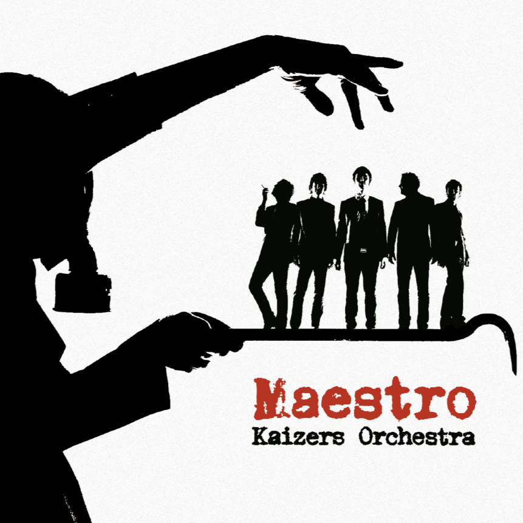

Maestro
|  |
|
Kaizers Orchestra
Janove Ottesen (vokal)
Geir Zahl (gitar)
Terje Winterstø (gitar)
Øyvind Storesund (kontrabass)
Rune Solheim (trommer)
Helge Risa (pumpeorgel)
Maestro ble innspilt og mikset av Jørgen Træen i Duper Studio, Bergen februar/mars 2005 Produsert av Træen/Ottesen. Mastret av Bjørn Engelman i Cutting Room, Stockholm 2005
Foto: Paal Audestad
Design: Atle Øksendal, Gosu
All musikk og tekst av Janove Ottesen, unntatt "Papa Har Lov" og "Auksjon" av Geir Zahl
Stryke-/blåsearrangement:
Ottesen, unntatt "Papa Har Lov" og "Auksjon" av Zahl.
Transkribert av Sindre Hotvedt
Kaizers takker:
Eivind, Kenneth og Lena på Vox Management, Thomas og Peer på Atomic Agency, Tobbe og Xenia på The Agency, Brian Nielsen på Scandinavian, Daniel Lieberberg, Daniel Pieper og alle på Universal Domestic Tyskland, André Lieberberg og Matt på MLK, Petter Singsaas og alle på Sonet/Universal Norge, Luc Bunt, Julia & Garage Oslo og Herdis & Newsman for øvingslokaler, Mike på Propeller, PAP AS, Luhtman, Fender Scandinavia, Norsk Musikkdistribusjon, Torbjørn Storås at Leading Light Berge, T-Rex, Lydrommet & Sennheiser, Vigdis og Petter på Schlagerforlaget, ProPerc, Ludwig, Audio Media, Luxottica, Gambit, Lasse på Bislet Bilutleie, Tieger of Sweden, Bertrand på LO-FI Merchandise, Gunn Møller på Briis, Inge Helland og William Hut for gitarlan, CymbalHåvard for ekstravagant service, Bjarte Ludvigsen og Edvwin Østevik for lån av trommeting, Tre45 for lån av bassting, Inga, LP, Lars G, Heidi, Kjetil og Reidar for à ha holdt liv i Rune under innspillingsperioden, Asbjørn, Kari, Kirsti og Leiv for det samme med Helge, Garage Bergen, Cementen, Mono, Internasjonalen, Mr. Kaizer, Skambankt, Cloroform, Micke, Sjur, Øystein, Børge, Paal, Jan, Elin, Kristin, Elise, Emna, Susanne, Oliver, Vera, Ragnhild, Else. Takktakk.
Kaizers Orchestra live crew:
Johan Kristian Berntsen: Lyd. Nils Foss: Lys. Tor Sørnes: Backline. Stig Kamonen: Monitor. Bjarke Mønsted: Turnéleder. Steinar Espeland: Merch & sånt.
Management: Artist Vision, Eivind Brydøy, eivind@artist.vision
Booking:TimeOut Agency, Thomas Olavsen, thomas@timeout.no
Plateselskap:Kaizerecords/Universal
Maestro er det tredje albumet til Kaizers Orchestra. Maestro ble spilt inn i Duper studio i Bergen med Jørgen Træem og gitt ut 15. august 2005. Bandet fikk signert platekontrakt med Universal Tyskland og kunne for første gang gi ut plate i Norge og store deler av Europa samtidig.